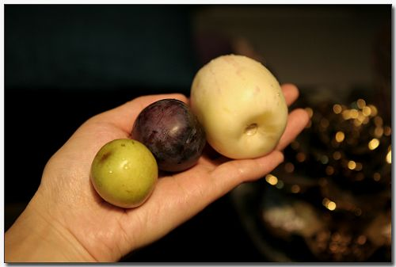

下班去麦德龙采购一批水果回家，喝完中午的骨头汤开始吃水果。这次买的越南火龙果果肉酸甜水分足，颠覆了以前绵绵的既没水分又无味道的印象，买了两，吃一个储备一个，够小农吧。
这些果子从左往右依次是沙枣、西梅和人参果。 边吃水果边看书，还要感叹一下这惬意的生活~爽歪歪~

果然够小农…… 这四样水果先吃哪个呢 我有一个梦想，就是让人参果里面糖分多些，不然吃完了还像二师兄一样连味道都没感觉出来
也有口味重的人参果，品种不同。今晚吃的的确跟二师兄吃人参果差不多滋味，但总好过直接吃维生素片儿，呵呵~
四样水果一起吃，果子就吃了一小篮儿，冰箱里还有结余，坚决将小农思想贯彻到底。四样一起吃会有化学反应吗？
我喜欢火龙果，刻意去咬小黑籽~~最近喜欢吃雪莲果~~
P2看起来好像年糕上面有点芝蔴，或是早上吃的真糕， 这水果还没吃过呢。。。
存档只读，评论已关闭。
Name (required)
Email (will not be published) (required)
Website
« 做功课 | 未能珍惜的年轻时光 »


4 Responses to “水果晚餐”
2009-09-15
果然够小农……
这四样水果先吃哪个呢
我有一个梦想，就是让人参果里面糖分多些，不然吃完了还像二师兄一样连味道都没感觉出来
2009-09-15
也有口味重的人参果，品种不同。今晚吃的的确跟二师兄吃人参果差不多滋味，但总好过直接吃维生素片儿，呵呵~
四样水果一起吃，果子就吃了一小篮儿，冰箱里还有结余，坚决将小农思想贯彻到底。四样一起吃会有化学反应吗？
2009-09-16
我喜欢火龙果，刻意去咬小黑籽~~最近喜欢吃雪莲果~~
2009-09-18
P2看起来好像年糕上面有点芝蔴，或是早上吃的真糕， 这水果还没吃过呢。。。
Leave A Reply
存档只读，评论已关闭。